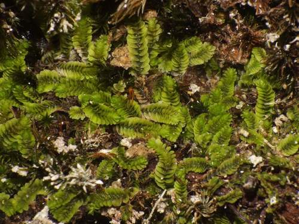

Arnelliaceae
Arnellia Family
Arnelliaceae is a monotypic family of leafy liverworts, containing only the species Arnellia fennica. This small, distinctive plant is restricted to arctic and alpine environments of the Northern Hemisphere, where it grows exclusively on calcareous (calcium-rich) substrates. It is characterized by its creeping habit, succubous entire leaves, and complete absence of underleaves.
Overview
The Arnelliaceae family is unique in containing just a single species, Arnellia fennica. This small liverwort holds significant biogeographical and ecological interest due to its strict habitat requirements and circumpolar arctic-alpine distribution. It is found exclusively in calcium-rich environments, typically growing as creeping patches on damp calcareous soil, silt, gravel, or in rock crevices, often associated with late snow-beds or stream margins in tundra and high mountain areas.
Morphologically, Arnelliaceae is distinguished by its combination of succubously arranged, entire (unlobed), rounded leaves that are often concave or hood-shaped, and the complete absence of underleaves. Branching is exclusively ventral-intercalary. These features, along with its specialized calcicolous habit, set it apart from related families within the Jungermanniales.
Phylogenetically, Arnelliaceae belongs to the suborder Jungermanniineae. It represents a relatively isolated lineage whose unique traits highlight the evolutionary diversity within this major group of liverworts and showcase adaptation to specific, challenging environmental conditions.
Quick Facts
- Scientific Name: Arnelliaceae
- Common Name: Arnellia Family
- Number of Genera: 1 (Arnellia)
- Number of Species: 1 (Arnellia fennica)
- Distribution: Circumpolar arctic-alpine (Northern Hemisphere)
- Evolutionary Group: Liverworts (Marchantiophyta) - Jungermanniopsida - Jungermanniineae
- Habitat Specificity: Strictly calcicolous (requires calcium-rich substrate)
Key Characteristics
Gametophyte Form and Habit
Plants are small, typically forming prostrate, creeping patches or growing as scattered shoots among other bryophytes. Color is usually pale green, yellowish-green, or sometimes brownish. Stems are relatively fleshy, creeping, with branching sparse and exclusively ventral-intercalary (arising from the ventral side between existing leaves).
Leaves and Underleaves
Leaves are arranged succubously and are typically closely overlapping (imbricate). They are broadly ovate to almost circular, with the apex entire (unlobed) and rounded. Leaves are often strongly concave or somewhat hood-shaped (cochleariform). Underleaves are completely absent.
Rhizoids
Rhizoids are numerous, long, colorless, and scattered along the ventral surface of the stem.
Cellular Structure
Leaf cells are relatively large, hexagonal or polygonal. Cell walls are typically thin, but possess distinct, often large and bulging, trigones (corner thickenings). Oil bodies are present, usually granular in appearance.
Asexual Reproduction
Asexual reproduction via gemmae is absent in this family.
Reproductive Structures
Plants are dioicous (separate male and female plants).
- Antheridia are borne in the axils of saccate dorsal bracts, forming intercalary spikes on main stems.
- Archegonia are terminal on leading shoots, surrounded by several pairs of bracts that are similar to vegetative leaves but often slightly larger.
- A distinctive perianth is present, emergent from the bracts. It is inflated and somewhat fleshy at the base, cylindrical above, and abruptly contracted to a small, tubular, beaked mouth. The surface is smooth. Marsupia are absent.
Sporophytes and Spores
The sporophyte develops within the perianth. The seta is relatively short. The capsule is ovoid, dark brown, with a wall composed of two layers of cells. Dehiscence occurs via four valves.
Field Identification
Identifying Arnelliaceae requires finding small, pale green, creeping liverworts in specific arctic-alpine calcareous habitats and noting the unique combination of entire leaves and absent underleaves.
Primary Identification Features
- Habitat: Strictly calcicolous (on calcareous soil, silt, gravel, rock crevices) in arctic or alpine regions.
- Leaves: Succubous arrangement; leaves entire, rounded at the apex, often concave/hooded.
- Underleaves: Completely absent.
- Habit: Small, creeping patches, often pale green.
- Branching: Exclusively ventral-intercalary.
Secondary Identification Features
- Cells (Microscopic): Relatively large with distinct, often bulging trigones.
- Gemmae: Absent.
- Perianth (if fertile): Distinctive shape - inflated base, cylindrical above, abruptly contracted to a beaked mouth.
Seasonal Identification Tips
Arnelliaceae gametophytes are perennial and best sought during the snow-free season:
- Growing Season (Summer): Look on damp, calcareous substrates in arctic-alpine tundra, especially near late snow patches or stream margins.
- Identification: Vegetative features (leaf shape, lack of underleaves, habitat) are key year-round. Reproductive structures may be present in summer.
Common Confusion Points
The combination of entire succubous leaves, no underleaves, and calcicolous arctic-alpine habitat is quite specific:
- Jungermanniaceae (subg. Solenostoma): Some species are calcicolous and have entire leaves and no underleaves, but typically differ in cell structure (trigones often smaller or different), perianth shape (often fusiform and plicate), and branching patterns (may include lateral branches).
- Gymnomitriaceae (Gymnomitrion, Marsupella): Share arctic-alpine habitats but leaves are typically bilobed or emarginate (not entire/rounded) and often tightly appressed; cell structure differs.
- Small Lophoziaceae or Cephaloziellaceae: Distinguished by having distinctly lobed leaves.
Field Guide Quick Reference
Look For:
- Small, creeping, pale green plants
- Calcareous arctic-alpine habitat
- Leaves succubous, entire, rounded
- Underleaves absent
- Branching ventral-intercalary only
- Gemmae absent
- (Microscope: Large cells, bulging trigones)
Key Distinctions:
- Entire leaves + Absent underleaves + Calcicolous habitat
- Leaves entire (vs. lobed in Lophoziaceae, Cephaloziellaceae)
- Underleaves absent (vs. present in Geocalycaceae, Jackiellaceae)
- Perianth shape distinctive (vs. Jungermanniaceae)
- Leaves not appressed (vs. Gymnomitrion)
Notable Examples
The family is monotypic, containing only one species:

Arnellia fennica
(No common name)
The sole species in the family. Exhibits all the key characteristics: small size, creeping habit, pale color, succubous entire rounded leaves, complete absence of underleaves, large cells with bulging trigones, ventral-intercalary branching, and restriction to calcareous arctic-alpine habitats across the Northern Hemisphere.
Phylogeny and Classification
Arnelliaceae is classified within the liverwort division Marchantiophyta, class Jungermanniopsida, order Jungermanniales, and suborder Jungermanniineae. Molecular phylogenetic studies place it within this suborder, but often as a relatively isolated lineage, distinct from the larger families like Jungermanniaceae, Lophoziaceae, and Scapaniaceae.
Its unique combination of morphological features (entire succubous leaves, no underleaves, exclusively ventral-intercalary branching, specific perianth form, large cells with bulging trigones) and strict ecological specialization (calcicolous arctic-alpine) supports its recognition as a distinct family, likely representing an early diverging or highly specialized branch within the Jungermanniineae.
Position in Plant Phylogeny
- Kingdom: Plantae
- Clade: Embryophytes (Land Plants)
- Division: Marchantiophyta (Liverworts)
- Class: Jungermanniopsida
- Order: Jungermanniales
- Suborder: Jungermanniineae
- Family: Arnelliaceae
Evolutionary Significance
Arnelliaceae, though comprising only one species, is significant for:
- Unique Morphology: Represents a distinct combination of vegetative and reproductive characters within Jungermanniineae.
- Ecological Specialization: A prime example of adaptation to specific, harsh, calcareous arctic-alpine environments.
- Phylogenetic Isolation: Highlights the diversity of evolutionary pathways and potential ancient lineages within its suborder.
- Biogeography: Its circumpolar arctic-alpine distribution pattern provides data for understanding plant migrations and refugia in relation to past climate changes.